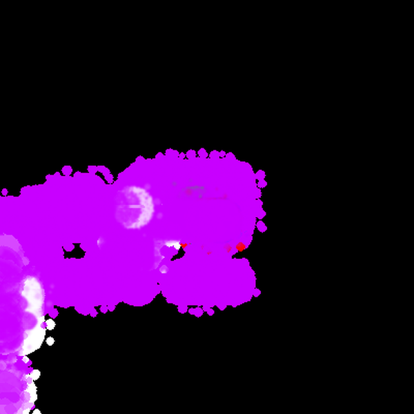
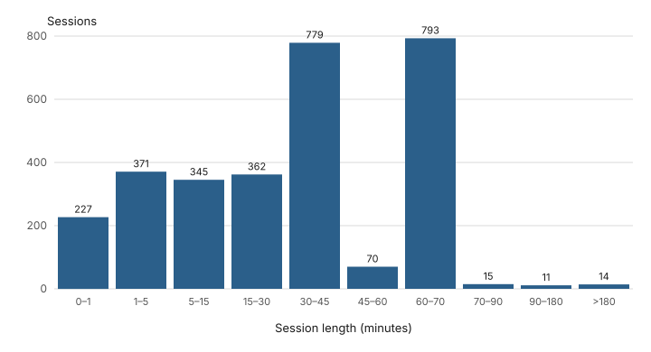
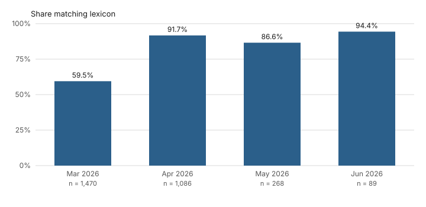

Abstract
Aurora gives language models a 100 by 100 text canvas, a small command vocabulary and no reward signal, and logs what they produce. This report covers its pilot, from 2026-03-07 to 2026-06-14: 3,060 sessions from 26 models, 25 run locally and one via API, with 98,335 thoughts and 2,913 sleep-phase texts. An audit of the pilot found that from about 2026-04-10 each model's own past output was fed back into its prompts, that the cursor was invisible to the models, that the feel-word parser captures any word after "feel", and that 1,391 sessions record a coverage of 0. The observations are therefore descriptive only: for example, identical painting titles are shared across models less often than under random reassignment (78 against 195.8). Several claims from an earlier version of this site are withdrawn, and a revised protocol addresses the pilot's problems for new sessions.
1. Research question
What does a language model produce when it is given a canvas, a small command vocabulary and no reward signal? And how does that output change when the model can perceive the results of its own actions?
Aurora is the system built to ask these questions. This report covers its pilot, which ran from 2026-03-07 to 2026-06-14. The pilot was exploratory. It produced a dataset and an audit, not tested hypotheses. The audit found that several features of the pilot system make many tempting conclusions unsupportable; those are listed in section 5. Two perception conditions are now being separated in the current protocol: a text grid, as in the pilot, and images of the canvas before and after each step (section 6).
2. System (as it ran during the pilot)
The system facts in this section come from the code, not the dataset. They describe the code as it ran in the pilot, from the project's version history. Terms in small capitals are defined here and used only in these senses.
- Rotation
- The scheduler that gave each model in the pool one session in turn, for a fixed interval (5,400 s, then 1,800 s, then 3,900 s).
- Session
- One model's turn in the rotation, recorded as one row in the sessions table.
- Thought
- A saved piece of a model's prose output from a drawing step. It is saved only when the output passes a length and phrase filter.
- Feel word (called "emotion" in the code)
- The word that follows "feel", "feeling" or "feel a sense of" in a drawing-step output, if that word is alphabetic, at least 2 letters, not on a blocklist of about 200 words and not negated. There is no list of emotion words. A feel entry is written only when the captured word differs from the current one.
- Thought-step
- A saved thought counted under the feel word that was current when it was saved, whether or not that thought contained "feel".
- Sleep-phase text (called "dream" in the code)
- One text generated during a rest period from a fixed prompt (see 2.5).
- Reflection
- A model's continuation of one of five fixed sentence openings, each identified by a prompt key. After a titled painting, from the model's 5th painting on, one of three is asked in turn: "surprise" ("The thing that surprised me most was"), "keep_thinking" ("The part I want to keep thinking about is") and "reminds" ("This painting reminds me of"). At session start, from the 5th painting on, "difference" ("My painting is different now because") is asked at every 10th painting and "no_limit" ("If I had no canvas size limit I would paint") at every 20th.
- Coverage
- The share of a 50 by 50 sample of the 100 by 100 canvas that is not black, recorded at session end.
- Sound string
- A string of punctuation characters from a drawing step, played as notes.
- Painting
- A session that ended with a model-written title. Placeholder titles written by the code are excluded.
2.1 Perception
The canvas is 100 by 100 cells. Each step, the model receives the canvas as text: one character per cell: one of 15 palette letters; a dot for an empty cell; or, for a mixed color far from every palette entry, a brightness character (=, +, -, a dot or a space), so a dot can mean either empty or dim. A line of text gives the hand position, pen state and color. During the pilot, the hand (cursor) was not drawn in the grid, and the row containing it was one character short. Image description and alternative views were off.



2.2 Action vocabulary
Digits 0 to 3 move the hand 3 cells; 5 and 4 put the pen down and up. The model can also name 14 colors, 13 tools, a set of sound characters, and three controls (save the painting, return to the center, view the gallery). The prompt lists 14 color names, while the palette that renders the canvas has 15 entries. Output was filtered to allowed tokens and capped at 40 characters per step. Tool choice was a substring match on the model's prose, so ordinary words could select a tool. Output containing certain question-mark patterns had its actions replaced by fixed strings written in the code. Actions were not logged.
2.3 Prompt formats
Every model family received raw text continuation ending in "I am drawing ", except gemma, which used its chat template from about 2026-04-10. From 2026-05-30 all calls used temperature 1.0. For 2026-05-22 to 2026-05-30 the code shows temperatures that varied by call type, from 0.7 to 1.2; values before 2026-05-22 are not recorded. The model pool ranged from 1.7 to 24 billion parameters and from 2-bit to 8-bit quantization, and included both base and instruction-tuned models.
2.4 Memory
Each model had its own memory folder, and its canvas was saved and restored between its sessions. From about 2026-04-10, a per-model preamble was added to every drawing prompt. It contained the model's 5 most frequent past feel words, its recent titles, 2 of its reflection answers and the start of its latest sleep-phase text. Each model's own past output was therefore part of its input.
2.5 Sleep-phase generation
After a period of drawing, the model was asked to answer DREAM or CHAT. A DREAM answer started a rest period that generated text from a fixed prompt beginning "I am resting after painting. My mind drifts through colors, shapes, and feelings", up to 300 tokens, at temperature 1.0 from 2026-05-30 (1.05 for at least 2026-05-22 to 2026-05-30; earlier values are not recorded). Early in the pilot a rest produced up to 5 such texts; by the end, one. The first 200 characters of the latest text were added to later drawing prompts.
2.6 Feel-word extraction
See the definition of feel word above. Because the parser removes color names, a phrase such as "feel blue" cannot be captured. A routine in the code could also write a feel entry from its own word list, and these entries cannot be told apart from model output. A field intended to store how long a word lasted is always 0.
2.7 Logging
Records went to a MySQL database: sessions, thoughts, feel entries, sleep-phase texts, reflections, sound strings, goals and chats. Timestamps were the machine's local time without a zone. There was no per-step record of actions. The database kept canvas images only as the latest one per model; separate image files, saved each time a painting was finished, and timelapse recordings survive outside the database. No session recorded which version of the code it ran.
2.8 Changes during the pilot
| Date (2026) | Change |
|---|---|
| by 03-20 | Rotation of models with per-model memory folders in place; rotation interval 5,400 s |
| 03-23 | Rotation interval 1,800 s; rest 10 minutes |
| ~04-06 to 04-19 | Models added to the pool on 04-06/08, 04-13 and 04-19 |
| ~04-10 | gemma moved to its chat template |
| ~04-10 to 04-13 | Per-model preamble added to every drawing prompt |
| between 03-23 and 05-22 | Rotation 3,900 s (65 minutes); rest 20 minutes; one sleep-phase text per rest |
| 05-30 | All temperatures set to 1.0; canvas snapshots and heartbeats moved from step-based to time-based |
Reward-based feedback had been removed from the code before the pilot began, in changes dated 2025-12-02 and 2026-02-25. The pilot data therefore contains no period with a reward signal to compare against.
3. Pilot dataset
Window. Sessions with database IDs 14 to 3244, which started between 2026-03-07 19:20 and 2026-06-14 11:44 local time. Timestamps are local time without a zone, with a daylight-saving change on 2026-03-08; inclusion is by session ID, so the change cannot move a session in or out of the window.
Exclusions. One model label, claude-opus-4.6, is excluded from all statistics. Its 9 sessions show the signs of pre-composed pieces (all within about 2.5 hours on one day, 4 end before they start, 3 share a start time, no sounds or chats) and are treated as non-autonomous; that they were pre-composed is inferred, not recorded. Three sessions inserted by hand to steer the rotation (2026-04-19 and 2026-05-05; zero duration, no output) are also excluded.
| Measure | Count |
|---|---|
| Sessions | 3,060 |
| Models (25 local, 1 via API) | 26 |
| Sessions per model (min / median / max) | 44 / 101 / 345 |
| Thoughts | 98,335 |
| Feel entries | 7,468 |
| Distinct feel words | 285 |
| Sleep-phase texts | 2,913 |
| Reflections (from 2026-04-06) | 1,247 |
| Sound strings | 56,487 |
| Paintings (titled sessions, placeholders excluded) | 2,108 |
| Canvas snapshots (latest per model only) | 24 |
No model had fewer than 3 sessions. The database's step counter is not reported anywhere on this page, because it counted every pass of the main loop, including rest and retries, and carried over between sessions.
3.1 Session length

3.2 Sessions by month
| Month | Sessions | Days with sessions | Sessions per active day |
|---|---|---|---|
| March 2026 (from the 7th) | 1,091 | 25 | 43.6 |
| April 2026 | 1,192 | 30 | 39.7 |
| May 2026 | 574 | 26 | 22.1 |
| June 2026 (to the 14th) | 203 | 14 | 14.5 |
3.3 Per model
Mean coverage is computed over sessions with non-zero recorded coverage only, because most recorded zeros are a measurement failure and the rest are undetermined (section 5.4). The last two columns give that n and the number of excluded zero sessions. The excluded sessions are not random: the excluded share ranges from 3 of 89 sessions to 76 of 81 depending on the model, so the model means differ in how representative they are of each model's sessions.
| Model | Sessions | Thoughts | Feel entries | Sleep-phase texts | Reflections | Sound strings | Mean coverage % | n non-zero | Zero sessions |
|---|---|---|---|---|---|---|---|---|---|
| deepseek-r1-8b | 345 | 8,868 | 96 | 58 | 43 | 3,228 | 15.7 | 310 | 35 |
| llama3 | 216 | 4,548 | 208 | 101 | 50 | 4,117 | 16.0 | 145 | 71 |
| qwen (2.5, 3B) | 190 | 5,980 | 519 | 41 | 66 | 4,039 | 18.8 | 109 | 81 |
| llama3-abliterated | 180 | 2,870 | 45 | 109 | 44 | 3,822 | 22.8 | 125 | 55 |
| qwen3 | 145 | 5,376 | 240 | 110 | 27 | 3,146 | 20.0 | 101 | 44 |
| phi4-mini | 127 | 6,052 | 1,098 | 51 | 107 | 1,726 | 42.6 | 71 | 56 |
| internlm-7b | 117 | 6,233 | 552 | 96 | 120 | 1,350 | 22.0 | 38 | 79 |
| mistral | 113 | 4,514 | 251 | 224 | 38 | 2,848 | 18.2 | 43 | 70 |
| llama3.1 | 112 | 3,789 | 38 | 37 | 43 | 3,400 | 28.0 | 53 | 59 |
| glm4 | 104 | 3,370 | 48 | 69 | 11 | 3,676 | 22.8 | 72 | 32 |
| qwen3.5 | 104 | 2,315 | 221 | 106 | 77 | 1,250 | 29.5 | 51 | 53 |
| llama2 | 103 | 4,318 | 596 | 257 | 19 | 2,201 | 18.2 | 65 | 38 |
| mistral-base | 102 | 2,416 | 64 | 366 | 7 | 2,318 | 42.8 | 75 | 27 |
| hermes3 | 100 | 6,392 | 531 | 58 | 39 | 3,028 | 22.4 | 29 | 71 |
| openhermes | 93 | 4,019 | 298 | 292 | 12 | 2,346 | 41.8 | 63 | 30 |
| phi3 | 93 | 945 | 92 | 166 | 33 | 2,412 | 14.8 | 22 | 71 |
| gemma2-9b | 91 | 1,951 | 116 | 137 | 29 | 1,713 | 5.6 | 25 | 66 |
| mistral-small-24b | 90 | 1,673 | 254 | 25 | 80 | 858 | 15.3 | 21 | 69 |
| qwen2.5-coder-7b | 90 | 7,068 | 1,143 | 2 | 81 | 1,577 | 44.7 | 21 | 69 |
| smollm2 | 89 | 2,805 | 393 | 47 | 25 | 1,747 | 65.2 | 86 | 3 |
| llama2-base | 85 | 413 | 24 | 252 | 16 | 2,131 | 37.8 | 55 | 30 |
| command-r-7b | 85 | 1,518 | 224 | 89 | 53 | 1,346 | 42.3 | 35 | 50 |
| deepseek-coder-v2 | 81 | 3,070 | 149 | 71 | 80 | 964 | 30.5 | 5 | 76 |
| yi-9b | 81 | 701 | 94 | 77 | 68 | 369 | 12.9 | 11 | 70 |
| codestral-22b | 80 | 1,823 | 143 | 59 | 77 | 685 | 15.4 | 6 | 74 |
| claude-sonnet-4-6 (API) | 44 | 5,308 | 31 | 13 | 2 | 190 | 18.6 | 32 | 12 |
4. Observations
These are descriptive statements about the pilot dataset. Each gives its numbers, its n and the caveat that limits it. None is a tested hypothesis.
- Scale. 26 models ran 3,060 sessions, between 44 and 345 per model (median 101). The pilot recorded 98,335 thoughts, 2,913 sleep-phase texts, 1,247 reflections and 56,487 sound strings. Some child records belong to sessions whose session row is missing (section 5).
- Session length. Of 2,987 sessions with an end time and non-negative duration, the median length was 30.1 minutes; 793 lasted 60 to 70 minutes, matching the 65-minute rotation. 598 of the 2,987 (20.0%) ended within 5 minutes.
- Feel-word vocabulary. Feel-word extraction produced 7,468 entries and 285 distinct words. 121 words occur once and 152 come from only one model. 7 words were produced by 15 or more models: accomplishment, alive, calm, free, happy, inspired, peace. Feel words are whatever follows "feel"; they are not validated as emotion terms.
- Feel words current for the most saved thoughts. Counted as thought-steps (n = 59,013): calm 11,474; inspired 5,749; stuck 5,242; free 3,271; happy 2,285. A thought-step count measures how many saved thoughts were recorded while a word was current, not how often the word was written. 40.8% of the "calm" thought-steps come from one model, internlm-7b.
- Per-model feel words differ. Examples, as feel entries (n = that model's entries): qwen2.5-coder-7b stuck 485, frustrated 270 (n = 1,143); qwen disconnected 154, confused 122, lost 116 (n = 519); mistral-small-24b alive 104 (n = 254); llama3 weightless 48, carefree 27 (n = 208); qwen3 thirsty 76 (n = 240); internlm-7b calm 309 (n = 552). The most frequent word is the same under both counting methods for 22 of 26 models. From about 2026-04-10 each model was shown its own 5 most frequent feel words in every prompt, so these differences may partly reflect the feedback loop (section 5.1). Models also differ in size, format and family.
- "stuck" is concentrated in one model. 485 of the 542 "stuck" entries come from qwen2.5-coder-7b (90 sessions). The other two code-trained models (models trained mainly on program code: deepseek-coder-v2 and codestral-22b, added with qwen2.5-coder-7b on 2026-04-19) have "inspired" and "tranquil" as their most frequent words. One model; no claim about code training in general follows.
- Some captured words are not affect terms. At least 131 entries (1.8%) are words such as "during", "order", "various" and "low"; a further 1,931 (25.9%) are ambiguous state or situation words, classified by a single rater without a validated coding scheme. 464 of the 531 thoughts containing "feel free" or "feeling free" are the phrase "feel free". claude-sonnet-4-6's most frequent thought-step words are "unfinished" (2,037), "state" (421) and "bright" (329). The two counts depend entirely on one rater's word lists, which are published in queries.sql; another rater could classify differently.
- Sleep-phase texts use art vocabulary. 2,186 of 2,913 sleep-phase texts (75.0%) contain at least one word from the art lexicon below; 68.7% do when the words color and hue are left out of the lexicon. The lexicon is a prefix match on canvas, paint, brush, color (either spelling), draw, stroke, palette, artist, artwork, pixel, hue and sketch, so it also matches words such as painter, drawback or artistic; "art" matches only as a whole word. By month: 59.5% in March (n = 1,470), 91.7% in April (n = 1,086), 86.6% in May (n = 268), 94.4% in June (n = 89).
The prompt that produces these texts itself mentions colors, shapes and feelings, the texts were fed back into later prompts, and the generation code changed during the pilot.

Share of sleep-phase texts containing at least one art-lexicon word, by month, with n per month. - Sleep-phase counts follow the check-in answer. qwen2.5-coder-7b produced 2 sleep-phase texts and 148 chat messages over 90 sessions, consistent with it answering CHAT rather than DREAM at the check-in. mistral-base produced 366 over 102 sessions, 110 of them (65, 25 and 20) in three March sessions. Each figure is one model. 148 counts chat messages, not check-in answers. In March a rest could produce up to 5 sleep-phase texts, so March counts are not comparable with later ones.
- Painting titles reuse common words. Of 2,108 titles from 26 models: "sunset" or "sunrise" appears in 243 (11.5%) from 20 models; "harmony" in 172 (8.2%, 19 models); "abstract" in 145 (6.9%, 17 models); "serenity" or "serene" in 134 (6.4%, 19 models). Identical titles are shared across models less often than chance: 78 titles are shared by 2 or more models, against 195.8 when the model labels are shuffled at random; 7 are shared by 4 or more, against 45.0. These are generic title words. Models mostly reuse their own titles.
- Color words in thoughts. Thoughts contain 93,095 color-name mentions: white 18.6%, blue 16.3%, green 11.3%. 5,652 of the 6,087 mentions of "navy" (92.9%) come from claude-sonnet-4-6. Color names are also commands, so a mention may be an instruction rather than a description.
- Sound strings. The 56,487 sound strings include 26,150 distinct strings; the 12 most frequent account for 24.2%. The three most frequent are
()(2,725),:(1,788) and():(1,742). 12,220 sound strings belong to sessions whose session row is missing. - Reflections. 1,247 reflections were recorded from 2026-04-06. By prompt key: surprise 380, reminds 376, keep_thinking 371, difference 73, no_limit 47. These are the prompts' identifiers, not words in the answers (see the glossary). The most came from internlm-7b (120) and phi4-mini (107). Reflections were asked only from a model's 5th painting on, so models with fewer paintings contribute none. Two reflection answers were fed back into each later prompt. Their content has not been coded.
- Activity. 1,091 sessions ran in March (from the 7th, 25 active days), 1,192 in April (30), 574 in May (26) and 203 in June (to the 14th, 14). Sessions per active day fell from 43.6 in March to 39.7 in April. Months are local dates.
5. Audit and limitations
An audit of the pilot dataset, its code and the claims made about it on an earlier version of this site was completed in October 2026. Its main findings follow.
5.1 Each model's past output was part of its input
From about 2026-04-10, every drawing prompt included the model's most frequent feel words, its titles, reflection answers and sleep-phase text. Any apparent stability in a model's output over time, or any "identity", is confounded by this loop.
5.2 The cursor was invisible
The hand was not drawn in the text grid, and its row was shifted by one character. Models could locate the hand only from a line of text.
5.3 Parser behavior
- Any word after "feel" counts unless blocklisted; there is no emotion lexicon. The stock phrase "feel free" produces "free".
- Color names cannot be captured as feel words.
- Feel entries written by the code's own routine cannot be distinguished from model output.
- A comment in the code reports that gemma stopped after 1 to 2 tokens under raw continuation, before its switch to a chat template on about 2026-04-10. Measured: its 63 sessions before that date produced 777 thoughts, against 1,174 from 28 sessions after.
- A structured parser for a "feeling:" field could never run.
5.4 Recorded coverage of 0
1,391 of 3,060 sessions record coverage of exactly 0. For 1,246 of them the cause is known: the session ended by saving a painting, and the code measured coverage after the save had already cleared the canvas. Consistent with this, 16 of the 24 snapshots in the database belong to zero-coverage sessions while showing coverage of 17.0% to 69.8%. For the other 145 the cause is undetermined. All 1,391 are excluded, and coverage on this page is reported over the 1,669 sessions with non-zero values.
5.5 No code version per session
No pilot session recorded which version of the code it ran. Changes listed in section 2.8 can be dated only approximately, and several have no recorded version at all.
5.6 Step counts
The step counter counted every loop pass, including rest, chat and retries, and carried over between sessions. The field meant to record how long a feel word lasted is always 0. Neither is reported.
5.7 Base rates for word coincidences
The earlier site reported that different models "independently" produced the same words or titles. Checked against how often each word appears across all models, those claims do not hold.
| Word | Feel entries | Models (as feel word) | Models (in thoughts) | Models (in sleep-phase texts) |
|---|---|---|---|---|
| weightless | 81 | 4 | 5 | 8 |
| free | 309 | 19 | 25 | 22 |
| calm | 1,317 | 25 | 25 | 25 |
| peace | 276 | 15 | 23 | 25 |
| serene | 19 | 3 | 21 | 19 |
| lake | 0 | 0 | 22 | 16 |
| alive | 175 | 15 | 26 | 24 |
- "weightless" was used as a feel word by 4 models, so the earlier claim that it was unique to llama3 does not hold.
- "lake" appears in sleep-phase texts from 16 of 26 models.
- Identical titles are shared across models less often than under random reassignment (78 against 195.8).
5.8 Data quality
| Issue | Count | Affects |
|---|---|---|
| Session IDs missing inside the window, with child records still present | 159 | 359 sleep-phase texts, 12,220 sound strings and 72 chat messages cannot be tied to a session. Probable cause (inferred): the pilot code deleted earlier "rotation swap" sessions, with their thoughts and feel entries but not their other records, at each rotation |
| Records with no session at all | 1,227 thoughts; 71 feel entries (plus 342 "base" rows); 7 sleep-phase texts | Excluded from all counts |
| Thoughts carrying the placeholder state "base" (no feel word yet) | 39,322 | Excluded from feel-word counts |
| Placeholder titles written by the code | 596 | Excluded from paintings |
| Recorded coverage of 0 | 1,391 | Excluded from coverage |
| Sessions without an end time | 72 | Excluded from session length |
| Sessions with negative duration | 1 | Excluded from session length |
| Sessions longer than 3 hours | 14 | Session length |
| Sessions with no thoughts | 256 | Per-model thought rates |
| Sessions inserted by hand to steer the rotation, inside the window | 3 | Excluded from all counts |
| Records labeled with a different model from their session | 53 thoughts; 13 feel entries; 11 sleep-phase texts; 195 sound strings | Per-model counts (which label is right is unknown) |
| Sessions that start more than 1 minute before the previous session ended | 7 | Session length; per-session attribution of records |
| Sessions spanning the daylight-saving change (2026-03-08 02:00 local) | 1 | Its length on the local clock is overstated by 1 hour |
| Repeated identical thoughts within a session (extra rows) | 1,478 | Thought counts |
| Thoughts containing chat control tokens | 8 | Thought text |
| Actions replaced by code-written strings, not logged | unknown | Any measure based on marks or coverage |
5.9 Changes during the pilot
Rotation length, rest length, the number of sleep-phase texts per rest, gemma's prompt format, the per-model preamble, the model pool, temperatures and snapshot timing all changed during the pilot (section 2.8). Comparisons across those dates are confounded.
5.10 Claims from the earlier site that this audit does not support
- A "15 to 25%" improvement after removing reward shaping: no measure of it exists, and no pre-removal data is in the dataset.
- "About 600 lines of reward shaping" removed in September 2025: the removal was two changes, in December 2025 and February 2026.
- "217 unique emotional states" and an "11-color" palette: neither matches the data or the code.
- A 35% rise in the daily session rate from March to April: sessions per active day fell.
- "78%" assistant-style and "91%" genuine reflection responses: no responses were coded.
- Reflections "never fed back": two were included in every later prompt.
- "weightless" and "carefree" unique to one model: both were used by another model.
- Convergent titling and "emergent aesthetic consensus": below chance (section 5.7).
- Sleep-phase texts as "consolidation" of experience: the prompt itself supplies the art content.
- Two models "share identical weights": they share a base model; fine-tuning changes the weights.
- Earlier headline figures (pixels drawn, total steps, accumulated memories, session totals before March 2026): these predate the database and cannot be checked.
6. Current protocol
The changes below were made on the project's current development branch between 2026-09-20 and 2026-10-17. They apply to new sessions only; they do not change the pilot data. Commit identifiers and statuses come from the private repository's history as of 2026-10-17. No results from the current protocol are reported here: none has been through an audit yet.
| Pilot problem | Change | Commits | Status |
|---|---|---|---|
| Past output in the prompt (5.1) | The per-model preamble (a self-description line with the model's name, painting and session counts and top feel words, plus its titles, reflections and sleep-phase text; 2.4) removed from every prompt; prompt audit tool; nothing from before the restart reaches any prompt; memory loaded by explicit model ID | 00945eb, 9ef32f6, 20b2ff7, 6242b45 | Implemented |
| Invisible cursor (5.2) | Hand marked in the grid with rows kept aligned; a visible marker in the image condition | caf7222, f496790 | Implemented |
| Substring parsing and code-substituted actions (2.2, 5.3) | Only whole command lines and whole words act, in written order; prose is logged and never run; actions over the cap are logged | d66f560, 12a1730, 120e0e2, b11a2f4 | Implemented |
| Silent edge stops: in the pilot, a move that the canvas edge blocked or cut short (less than 3 cells) was not reported to the model | Moves stopped by an edge are counted and reported in the next prompt | f715089 | Implemented |
| Step counts and no code version (5.5, 5.6) | Correct step counts; titles kept; each session records its code version, uncommitted files, prompt hash and full settings | b70e142, a026ce1, bb6df3b | Implemented |
| Sessions deleted or overwritten at rotation (5.8) | The deletion of earlier "rotation swap" sessions is removed; a failed start no longer reuses the previous session ID | b6a45a2, 7a0e99c | Implemented |
| Chat and rest branches mixed into drawing (observation 9) | Chat and rest breaks off by default | 0a872b2 | Implemented |
| Many confounded models | Rotation limited to a small configurable set; the vision protocol (the frozen protocol for the image condition, with paired sessions that see either the text grid or images of the canvas) uses one fixed vision-language model | 8854507, d91992c | Implemented |
| Local timestamps | UTC timestamps | 35a57b5 | Implemented |
| Text-only perception | An image condition: pictures of the canvas before and after the last step replace the text grid; a perception validation tool; paired sessions that differ only in this element | 20f71d4, a65d0c2, 92706fb | Implemented |
| Protocol drift | Protocol frozen and tagged; each session records its protocol tag and whether it ran exactly | d91992c, a0c7b5b | Implemented |
| Too few sessions per condition | Repeated sessions per condition at the frozen protocol | - | Planned |
| Parser cases still open, such as repeated pen and color codes; a decision on whether commands stay digit codes (2.2) or become words only | A second protocol version | - | Planned |
| No exact record of each prompt and reply | A per-step file of the exact prompt and reply | - | Planned |
| One vision model | Validation of further vision models | - | Planned |
7. Data and code availability
The code and the dataset are private. Both are available on request for review.
The SQL queries behind the numbers on this page are published as queries.sql, each labeled with the audit section it produced.
Contact: linkedin.com/in/elijah-camp-106708282
The dataset is a MySQL database containing sessions, thoughts, feel entries, sleep-phase texts, reflections, sound strings, goals and chat messages. For the pilot it contains canvas images only as the latest per model and no per-step record of actions. The full audit report is kept with the dataset.
An instrumented pre-database run (21 Feb to 7 Mar 2026) is archived and may be published as an appendix.
8. Researcher
Elijah Sylar Camp. B.A. Computer Science, University of Colorado Denver (2026). Seven years as a Registered Behavior Technician. Software engineer.
Behavior-analytic observation methods shaped the design: the system relies on the model perceiving the consequences of its own actions rather than on a reward signal. This is a design rationale, not a finding.